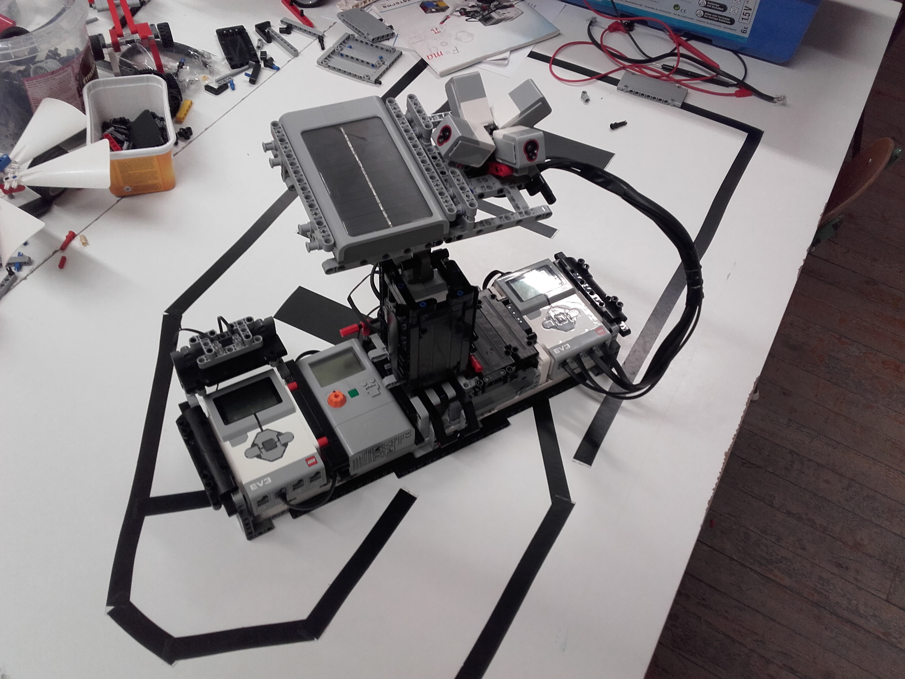

Dokumentáció
Dokumentáció A 2020/21 tanév második félévében, az egyetem Gép- és Terméktervezés tanszéke által meghirtdetett Modeling Chalenge 2021-es pályázatán veszek részt. A verseny során az adott félévben megtanult CAD program segítségével készített modellel tudják összemérni a tudásukat a hallgatók.
Én egy Lada Niva típusú személyautó vízpumpájáról készített modellel pályázok. A képek az eredeti alkatrészekről, valamint a honlap publikálásáig elkészült modellről a gelériában találhatók.
Galéria
-
XXVI. Károly Iréneusz Fizikaverseny
A Károly Iréneusz Fizikaverseny egy minden évben megrendezett tanulmányi csapatverseny középiskolások számára, mely több részfeladatból áll. A három fő része a versenynek: az otthoni forduló, mely során a versenyzők egy előre meghatározott témában kutatásokat végeznek, majd az eredményekről egy tanulmányt írnak. A második feladat során egy kísérletet kell összeállítani a diákoknak, amit a verseny napján a helyszínen be is kell mutatniuk. A harmadik részfeladat pedig egy írásbeli feladatot jelen. A diákok teljesítménye minden részfeladatban, valamint összességében is értékelve van.
A 2018-as versenyen a napelemekről kellett a kutatást végezni, amely pályamunkával harmadik helyezés értünk el a csapattársammal, Árvay Benedekkel. A kísérleti bemutatóra -kapcsolódva a tanulmány témájához- egy olyan robotot építettünk, amely a napelemtáblát fényérzékelő szenzorok segítségével automatikusan a legerősebb fényforrás felé fordítja, így maximalizálva a termelt elektromos áram mennyiségét. Ennek a robotnak én voltam az építője, míg a csapattársam programozta. A robottal kiérdemeltük a Nemzeti Közszolgálati Egyetem Víztudományi Karának különdíját.Galéria
 -
FLL 2017
A First Lego League verseny egy nemzetközi sorozat, melyet minden évben megrendeznek az általános, valamint középiskolás tanulóknak. A verseny vázául szolgáló témát minden évben egy társadalmi vagy természeti probléma, feladat ihleti. A verseny két fő részből épül fel, amelyek folyamán a csapatnak el kell végeznie egy kutatást, valamint ennek megfelelően egy megoldási javaslattal is elő kell állniuk az általuk felvázolt problémakörre. A másik, nagyobb részét pedig egy LEGO-robot építési és programozási feladat teszi ki. Ennek során egy megadott pályára kell a csapatnak robotot tervezni, építeni és programozni, ami különböző feladatokat teljesít. Mind a robotra, mind a pályára, illetve a feladatok teljesítésére is szigorú szabályok vontkoznak.
A 2017-es évben engem ért a megtiszteltetés, hogy az iskolai csaptot vezethettem. Mindemellett nagy szerepet vállaltam robot elkészítésében is. A Győrben tartott selejtezőn összesítésben negyedik helyen végzett a csapatunk.Galéria
-
FLL 2016
A First Lego League verseny egy nemzetközi sorozat, melyet minden évben megrendeznek az általános, valamint középiskolás tanulóknak. A verseny vázául szolgáló témát minden évben egy társadalmi vagy természeti probléma, feladat ihleti. A verseny két fő részből épül fel, amelyek folyamán a csapatnak el kell végeznie egy kutatást, valamint ennek megfelelően egy megoldási javaslattal is elő kell állniuk az általuk felvázolt problémakörre. A másik, nagyobb részét pedig egy LEGO-robot építési és programozási feladat teszi ki. Ennek során egy megadott pályára kell a csapatnak robotot tervezni, építeni és programozni, ami különböző feladatokat teljesít. Mind a robotra, mind a pályára, illetve a feladatok teljesítésére is szigorú szabályok vontkoznak.
A 2016-os versenyre való felkészülésben nagy szerepem volt, hiszen én építettem a robotunkat, valamint a kutatásban is aktívan segítettem a csapat munkáját. A Győrben tartott fordulón összesítésben harmadik helyet értünk el, míg a csapatok egységét díjazó részfeladatban elsők lettünk, illetve a robotunk harmadik helyet ért el a zsűri pontozása alapján.Galéria